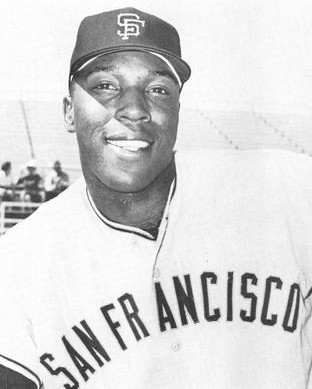
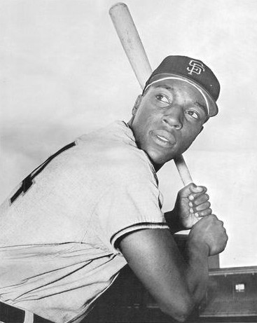
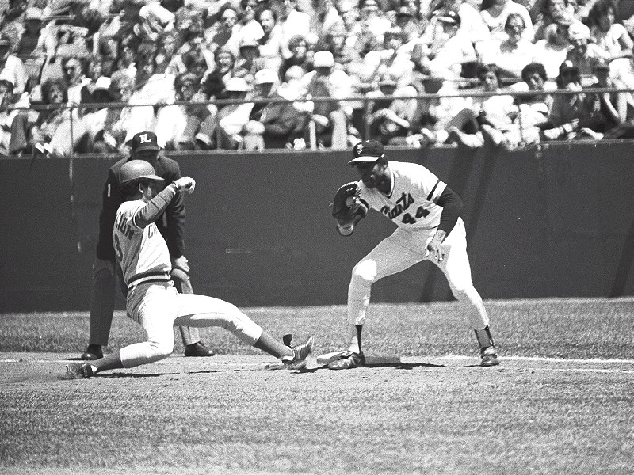
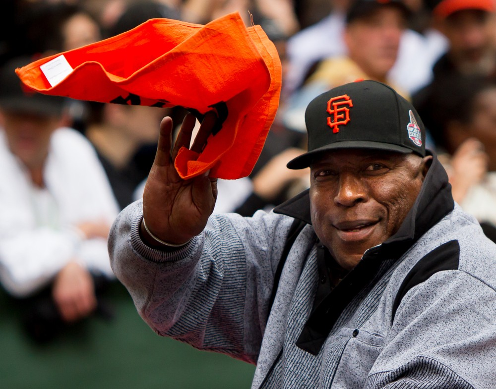

Willie “Stretch” McCovey
The scariest left handed bat in baseball, the line drive that was three feet too low, and the reason there's a cove with his name on it.
The Willie McCovey Story
If you've ever paddled a kayak into the water beyond right field at Oracle Park, you've been sitting in Willie McCovey's living room. When the ballpark opened in 2000 they named that water for him, because everybody in this town knew exactly where his line drives would have gone.
Willie Lee McCovey was born January 10, 1938, in Mobile, Alabama, the seventh of ten kids. His father Frank worked for the railroad and didn't say much, and when he did, the kids listened. Willie was delivering papers at 12, dropped out of high school to work full time, and was living with his brother in Los Angeles when his mother wrote that a Giants scout named Alex Pompez was looking for him. He went to the tryout camp in Melbourne, Florida, at 17, 165 pounds, and later said he was scared to death and couldn't have impressed anybody. Pompez had already seen him play. He signed for $175 a month.
He hit everywhere they sent him: 19 homers at Sandersville in 1955, 29 homers at Danville, and then in 1959 at Triple A Phoenix he had 29 homers and 92 RBIs in 95 games while hitting .372. The Giants had no choice anymore. They called him up on July 30, 1959.
That night at Seals Stadium, batting third between Willie Mays and Orlando Cepeda against Robin Roberts, he went 4 for 4 with two singles and two triples. He hit .354 with 13 homers in 52 games and was the National League Rookie of the Year anyway. It's one of the great debuts in baseball history.
Then came the hard part. The Giants had two first basemen, him and Cepeda, born four months apart, and they spent most of seven years trying to make it work. McCovey slumped in 1960, got sent down for a few weeks, and got booed at Candlestick. In 1962 Alvin Dark stuck him in left field, where the joke was that he didn't need a glove, just a blindfold and a cigarette. He still hit 20 homers in 229 at bats. Mays, playing next to him, kept telling him what to do and let him make plays Mays could have made himself.
In the 1962 World Series he homered off Ralph Terry in Game 2 for a 2 to 0 win, and then in the bottom of the ninth of Game 7, down 1 to 0, with Matty Alou on third and Mays on second and two outs, he hit a screaming line drive right at second baseman Bobby Richardson. Two months later Charles Schulz had Charlie Brown wailing in Peanuts: why couldn't McCovey have hit the ball just three feet higher?
He tied Hank Aaron for the league lead with 44 homers in 1963. He struggled in 1964, the year his father died and a painful foot problem started. When Cepeda's knee gave out in 1965, McCovey went back to first base and hit 39 homers, and in May 1966 the Giants finally traded Cepeda. First base was McCovey's for good.
In 1968, the Year of the Pitcher, he led the league with 36 homers and 105 RBIs. In 1969 he was the most feared hitter alive: 45 homers, 126 RBIs, .320, a league leading .453 on base percentage and .656 slugging, and 45 intentional walks, a major league record that stood until Barry Bonds. He hit two homers in the All Star Game and won the MVP of that, then won the National League MVP over Tom Seaver. In 1970 he hit 39 more and walked 137 times.
The knees started to go after that. He tore cartilage in the spring of 1971 and played the whole year on it anyway, then went 6 for 14 with two homers in the NLCS against Pittsburgh. A collision at first base broke his right forearm early in 1972. He still hit 29 homers in 1973, and then on October 25 the Giants, shedding salary, traded him to San Diego for Mike Caldwell. He spent two good years with the Padres and finished 1976 as a designated hitter in Oakland.
In 1977 he came back to the Giants with no promise of a job, made the club, and the home opener crowd gave him an ovation that went on for minutes and made him cry. At 39 he hit 28 homers with 86 RBIs and was named Comeback Player of the Year. He hit his 500th homer in Atlanta on June 30, 1978, and his 521st and last on May 3, 1980, in Montreal, tying Ted Williams and making him one of the few players to homer in four different decades. His final at bat, on July 6, 1980, at Dodger Stadium, was a go ahead pinch hit sacrifice fly.
He went into the Hall of Fame in 1986, his first year on the ballot, with 81.4 percent of the vote. The Giants retired his number 44, have given out the Willie Mac Award every year since 1980, named McCovey Cove when the new ballpark opened in 2000, and put up his statue at McCovey Point across the water in 2003. He hit 231 homers at Candlestick, more than anybody ever hit there.
His last years were hard on his body. Both knees replaced, four back surgeries, a wheelchair for more than a decade. In 1996 he pleaded guilty to a tax charge over memorabilia show income and was pardoned by President Obama in January 2017. On August 1, 2018, he married Estela Bejar at the ballpark, and he died at Stanford on October 31, 2018, at 80, with his friend Joe Morgan at his bedside.
What He Meant to Us
Stretch is the most San Francisco ballplayer there ever was. He didn't come here from New York with a reputation. He came up through our farm system, debuted at Seals Stadium, played his whole prime at Candlestick, and when his career was supposed to be over, he came back home and they gave him a standing ovation that made a 39 year old man cry. Then he stayed in town for the rest of his life.
What I love is how he hit. Not towering fly balls. Line drives that scared infielders. Sparky Anderson said he walked him so many times he could have walked to the moon. Casey Stengel asked his pitcher whether he wanted to pitch to McCovey upper deck or lower deck. In 1969, with the mound already lowered to help hitters, nobody wanted any part of him, and they walked him intentionally 45 times.
And yes, the line drive. Game 7, 1962, two outs in the ninth, the tying run on third and the winning run on second, and he hit it as hard as anybody hit anything all year. Richardson barely had to move. When they asked him how he wanted to be remembered, years later, he said as the guy who hit the ball over Bobby Richardson's head. I'd love to give him that one.
When the new ballpark opened, they named the water after him. Every splash hit since lands in McCovey Cove. That's the right call.
In Pictures



Why He Was Clutch
McCovey's clutch case starts with the people who had to pitch to him. In 1969 teams walked him intentionally 45 times, a record that lasted 33 years until Bonds broke it. In 1970 they did it 40 more times. Managers decided they'd rather put a man on base than let Stretch swing with anybody aboard.
When he did get something to hit, it went a long way at the worst time for the other side. He hit 18 grand slams, a National League record. In the 1962 World Series his solo homer off Ralph Terry was the difference in a 2 to 0 win in Game 2. In Game 1 of the 1971 NLCS he hit a two run homer off Steve Blass that put the Giants up 5 to 2 in a game they won 5 to 4. And Don Drysdale, a Cy Young winner, gave up a .336 average and 12 homers to him over their careers.
Even the out everybody remembers is a clutch at bat. Down to the last out of the season, Ralph Houk chose to pitch to him instead of walking him to get to Cepeda, and he hit a bullet. It just went right at somebody.
Clutch Moments
- July 30, 1959
Four for four off Robin Roberts
His first big league game, at Seals Stadium, batting third between Mays and Cepeda against a future Hall of Famer. McCovey singled in the first, tripled in the fourth, singled home Mays in the fifth and tripled home Mays again in the seventh. The Giants beat the Phillies 7 to 2, and the kid hit .354 the rest of the way.
- August 11, 1962
Pinch hit bomb off Drysdale
Dodgers at Candlestick in the thick of the 1962 race. McCovey came off the bench in the sixth with the Giants down 3 to 2 and hit a three run homer off Don Drysdale, scoring Felipe Alou and Billy O'Dell, and the Giants held on to win 5 to 4. Russ Hodges said nobody really knew where or when it landed.
- October 5, 1962
The only run Game 2 needed
Leading 1 to 0 in the seventh inning of World Series Game 2 at Candlestick, McCovey homered off Ralph Terry. The Giants evened the Series with a 2 to 0 win over the Yankees.
- October 16, 1962
Three feet too low
Game 7, bottom of the ninth, Yankees up 1 to 0. Matty Alou on third, Mays on second after a two out double, and Ralph Houk chose to let Terry pitch to McCovey rather than walk him to face Cepeda. McCovey had already tripled off Terry in the seventh.
He hit a long foul ball, then a bullet directly at second baseman Bobby Richardson, who squeezed it. Final out. Yankees champions. Peanuts made it immortal two months later.
- July 23, 1969
Two homers and the All Star MVP
At RFK Stadium in Washington, batting cleanup for the National League, McCovey hit one homer off John Odom and another off Denny McLain in a 9 to 3 win, and was named the game's Most Valuable Player in the year he also won the NL MVP.
- October 2, 1971
Off Blass in the NLCS opener
The Giants' first postseason game in nine years. Up 3 to 2 in the fifth at Candlestick, Mays walked and McCovey hit a two run homer off Steve Blass to make it 5 to 2. The Giants won Game 1 by 5 to 4, and McCovey finished the series 6 for 14 with two homers.
- September 18, 1977
Willie McCovey Day walk off
Before the game at Candlestick the Giants held Willie McCovey Day, and close to tears he thanked everyone he could think of, including his mother Ester, who was on the field. Then, tied 2 to 2 with two outs in the bottom of the ninth against the Reds, he singled to left off Pedro Borbon to score Derrel Thomas and win it 3 to 2.
- June 30, 1978
Number 500
At Fulton County Stadium in Atlanta, McCovey homered off Jamie Easterly in the second inning for the 500th home run of his career. He had 21 more in him, and the last one, in 1980, tied him with Ted Williams.
The Highlights
What They Said About McCovey
“If you pitch to him he’ll ruin baseball. He’d hit 80 home runs. There’s no comparison between McCovey and anybody else in the league.”
“I walked Willie McCovey so many times, he could have walked to the moon on all those walks.”
“He has a near perfect swing, a picture swing, and he doesn’t go after too many bad balls.”
“He built up my confidence. He let me make plays he could have made, and the club would have wanted him to make.”
“I knew then what it felt like to be a Giant. I knew then that there is still some loyalty around.”
“As the guy who hit the ball over Bobby Richardson’s head in the seventh game”
Career Stats
| Year | Team | G | AB | R | H | 2B | 3B | HR | RBI | SB | BB | AVG | OBP | SLG | OPS |
|---|---|---|---|---|---|---|---|---|---|---|---|---|---|---|---|
| 1959 | SF | 52 | 192 | 32 | 68 | 9 | 5 | 13 | 38 | 2 | 22 | .354 | .429 | .656 | 1.085 |
| 1960 | SF | 101 | 260 | 37 | 62 | 15 | 3 | 13 | 51 | 1 | 45 | .238 | .349 | .469 | .818 |
| 1961 | SF | 106 | 328 | 59 | 89 | 12 | 3 | 18 | 50 | 1 | 37 | .271 | .350 | .491 | .841 |
| 1962 | SF | 91 | 229 | 41 | 67 | 6 | 1 | 20 | 54 | 3 | 29 | .293 | .368 | .590 | .958 |
| 1963 | SF | 152 | 564 | 103 | 158 | 19 | 5 | 44 | 102 | 1 | 50 | .280 | .350 | .566 | .916 |
| 1964 | SF | 130 | 364 | 55 | 80 | 14 | 1 | 18 | 54 | 2 | 61 | .220 | .336 | .412 | .748 |
| 1965 | SF | 160 | 540 | 93 | 149 | 17 | 4 | 39 | 92 | 0 | 88 | .276 | .381 | .539 | .920 |
| 1966 | SF | 150 | 502 | 85 | 148 | 26 | 6 | 36 | 96 | 2 | 76 | .295 | .391 | .586 | .977 |
| 1967 | SF | 135 | 456 | 73 | 126 | 17 | 4 | 31 | 91 | 3 | 71 | .276 | .378 | .535 | .913 |
| 1968 | SF | 148 | 523 | 81 | 153 | 16 | 4 | 36 | 105 | 4 | 72 | .293 | .378 | .545 | .923 |
| 1969 | SF | 149 | 491 | 101 | 157 | 26 | 2 | 45 | 126 | 0 | 121 | .320 | .453 | .656 | 1.109 |
| 1970 | SF | 152 | 495 | 98 | 143 | 39 | 2 | 39 | 126 | 0 | 137 | .289 | .444 | .612 | 1.056 |
| 1971 | SF | 105 | 329 | 45 | 91 | 13 | 0 | 18 | 70 | 0 | 64 | .277 | .396 | .480 | .876 |
| 1972 | SF | 81 | 263 | 30 | 56 | 8 | 0 | 14 | 35 | 0 | 38 | .213 | .316 | .403 | .719 |
| 1973 | SF | 130 | 383 | 52 | 102 | 14 | 3 | 29 | 75 | 1 | 105 | .266 | .420 | .546 | .966 |
| 1974 | SD | 128 | 344 | 53 | 87 | 19 | 1 | 22 | 63 | 1 | 96 | .253 | .416 | .506 | .922 |
| 1975 | SD | 122 | 413 | 43 | 104 | 17 | 0 | 23 | 68 | 1 | 57 | .252 | .345 | .460 | .805 |
| 1976 | SD | 71 | 202 | 20 | 41 | 9 | 0 | 7 | 36 | 0 | 21 | .203 | .281 | .351 | .632 |
| 1976 | OAK | 11 | 24 | 0 | 5 | 0 | 0 | 0 | 0 | 0 | 3 | .208 | .296 | .208 | .504 |
| 1977 | SF | 141 | 478 | 54 | 134 | 21 | 0 | 28 | 86 | 3 | 67 | .280 | .367 | .500 | .867 |
| 1978 | SF | 108 | 351 | 32 | 80 | 19 | 2 | 12 | 64 | 1 | 36 | .228 | .298 | .396 | .694 |
| 1979 | SF | 117 | 353 | 34 | 88 | 9 | 0 | 15 | 57 | 0 | 36 | .249 | .318 | .402 | .720 |
| 1980 | SF | 48 | 113 | 8 | 23 | 8 | 0 | 1 | 16 | 0 | 13 | .204 | .285 | .301 | .586 |
| Career | 2588 | 8197 | 1229 | 2211 | 353 | 46 | 521 | 1555 | 26 | 1345 | .270 | .374 | .515 | .889 |
Full career. SD is the San Diego Padres, OAK the Oakland A's, where he finished 1976. Scroll the table sideways on a phone.
Postseason
| Year | Team | G | AB | R | H | 2B | 3B | HR | RBI | SB | BB | AVG | SLG |
|---|---|---|---|---|---|---|---|---|---|---|---|---|---|
| 1962 | SF | 4 | 15 | 2 | 3 | 0 | 1 | 1 | 1 | 0 | 1 | .200 | .533 |
| 1971 | SF | 4 | 14 | 2 | 6 | 0 | 0 | 2 | 6 | 0 | 4 | .429 | .857 |
| Career | 8 | 29 | 4 | 9 | 0 | 1 | 3 | 7 | 0 | 5 | .310 | .690 |